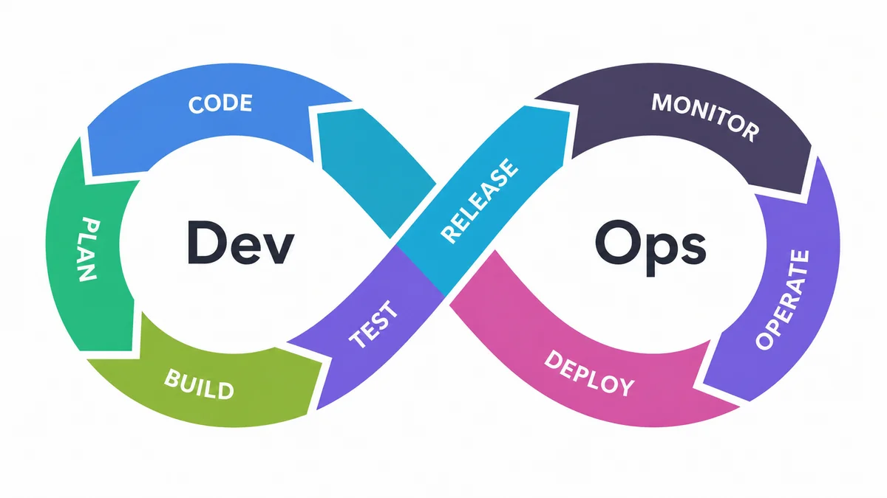

Introduction to DevOps and the Unix Environment
Understand where DevOps came from, what it actually means in practice, and take your first confident steps in the terminal.
A brief history of the wall
Start with two job descriptions. The development team decides what the software should do, writes the code and tests changes. The operations team deploys new releases, runs the servers or cloud services, monitors the live service and restores it when it fails. The live service that real users depend on is called production.
| Development (Dev) | Operations (Ops) | |
|---|---|---|
| Main job | Build and change the software | Run and protect the live service |
| Typical tasks | Agree requirements, write code, test changes, prepare releases | Deploy releases, manage servers and networks, monitor, respond to failures |
| Measured on | Delivering useful change | Keeping the service stable and available |
One example runs through this module. Students ask the university timetable app to warn them before they book two classes that clash. Development designs, codes and tests the warning. Operations deploys the new version and keeps the timetable available during registration week, when everyone uses it at once.
In the early 2000s, almost every software company operated with a strict divide. The development team wrote code on their laptops and declared it ready when it passed their local tests. They then handed it to the operations team, whose job was to keep production systems stable. The operations team often had no idea how the code worked internally, and the developers had no idea how it was deployed.
The result was a process called a release, which happened every few months and was invariably painful. Developers had accumulated weeks of changes. Operations had to deploy everything at once. Bugs that had been invisible in development appeared immediately in production because the production environment was subtly different. Both teams blamed the other. The incentives made it worse: Development was rewarded for shipping change and Operations for stability, so every change looked like a threat to Operations. The wall between them — sometimes called the wall of confusion — grew higher.
In 2009, John Allspaw and Paul Hammond gave a talk at the O'Reilly Velocity conference titled 10+ Deploys Per Day: Dev and Ops Cooperation at Flickr. Flickr, the photo-sharing platform, was deploying to production more than ten times per day — unheard of at the time. Their secret was not a magical technology. It was a change in how the two teams worked together.
That talk catalysed a community conversation. Patrick Debois, a Belgian consultant who had been thinking about the same problems independently, organised the first DevOpsDays conference in Ghent, Belgium, in October 2009. He needed a hashtag for Twitter and combined the words: #DevOps. The name stuck.
Since then, DevOps has grown from a grassroots practitioner movement into mainstream industry practice. Today it encompasses a set of tools, processes, and — most importantly — cultural attitudes that are expected of professional software teams worldwide.
You are starting your degree at a moment when DevOps practices are universal. Employers in software roles — whether you end up as a developer, a data engineer, a security analyst, or a product manager — will assume you are comfortable with version control, automated testing, and deployment pipelines.
This module is not a specialist elective. It is a foundation that everything else in your degree builds on.
What DevOps actually is
DevOps is one of those terms that means different things to different people. Recruiters use it to mean 'knows how to use Kubernetes'. Vendors use it to sell platform software. Practitioners use it to describe a philosophy. Let us be precise.
At its core, DevOps is the practice of breaking down the barriers between software development and software operations so that teams can deliver software faster and more reliably. It involves three things working together:
The DevOps lifecycle
DevOps organises software delivery as a continuous loop. Work flows from planning all the way through to live monitoring, and the signals observed in production directly inform the next round of development. This cycle is often drawn as an infinity symbol — deliberately: the work never stops, it keeps flowing.

The Code, Build and Test stages are where most of the automation lives. Together they form the pipeline: a sequence of automated checks that every change must pass before it reaches users.
Continuous Integration (CI)
Continuous Integration is the practice of merging every developer's work into a shared branch frequently — at minimum once a day, often many times. Each merge triggers an automated build and an automated test run. If the build breaks or a test fails, the team fixes it immediately rather than leaving the problem to accumulate.
Before CI became standard, teams worked in isolation on long-lived feature branches for weeks or months at a time. When the time came to merge, they discovered that independent changes had diverged in ways that were painful to reconcile — a problem called integration hell.
Consider a typical scenario: Developer A has spent two weeks refactoring the UserService class, splitting it into three smaller classes and renaming several methods. Developer B, working in parallel, has spent the same two weeks building a new payments feature that calls the old UserService methods by their original names. When B tries to merge, every call site is broken. Fixing them reveals that A's new class structure conflicts with B's assumptions about how user data is organised. Fixing that reveals that a third developer, C, has meanwhile changed the database schema in a way that neither A nor B accounted for. Each fix uncovers another conflict. The team spends days untangling changes that were individually straightforward but collectively incompatible — often in a high-pressure crunch because a deadline is approaching.
The root cause is time: the longer branches diverge, the more they drift apart, and the harder integration becomes. CI prevents integration hell by making integration a constant, cheap activity rather than a rare, expensive one. Small merges are easy to reason about; merges of three weeks' work are not.
In practice: you push a commit to GitHub. Within two minutes, a CI server (such as GitHub Actions) has checked out your code, installed dependencies, compiled it, and run every automated test. If anything fails, you get an immediate notification. You fix it while the context is still fresh — not three weeks later when a colleague is blocked.
Continuous Delivery and Deployment (CD)
Continuous Delivery extends CI by ensuring that every commit that passes all tests is always in a deployable state. The software is packaged, environment-tested, and ready to release to users at any moment. Releasing becomes a business decision, not a technical one.
Continuous Deployment goes one step further: the deployment to production happens automatically once the pipeline passes. No human clicks a button. Amazon reportedly deploys to production every few seconds using this approach.
Infrastructure as Code
Traditionally, a server was configured by a person logging in, installing packages, and editing configuration files by hand. Those settings existed only on that machine. If it crashed, re-creating it was difficult and error-prone — and rarely identical to the original.
Infrastructure as Code (IaC) replaces manual server configuration with code files. Servers, networks, and deployment environments are described in version-controlled files — just like application code. Tools such as Terraform, Ansible, and Pulumi read those files and create or update infrastructure automatically. The same environment can be reproduced exactly, anywhere, at any time.
Shift left
The phrase shift left refers to moving quality checks, security scans, and testing to earlier stages of the pipeline — towards the left on the diagram above. A bug caught by an automated test costs minutes to fix. The same bug discovered in production costs hours of incident response, a post-mortem, a patch, and a redeployment. Shifting left is an economic argument: the earlier you find a problem, the cheaper it is to fix.
Tools are the most visible part of DevOps — you can buy a tool, you can install a tool. But organisations that adopt DevOps tools without the culture and practices rarely see the benefits. The pipeline is useless if developers are afraid to deploy on Fridays. Automated tests are useless if nobody looks at the results.
- Not a job title. ‘DevOps engineer’ adverts exist, but DevOps describes how a whole team works, not one hire.
- Not a product. No vendor can sell you DevOps, however hard they try.
- Not just tools. Git, Docker and pipelines on top of the old culture are just the old wall with nicer bricks.
- Not only for tech giants. A two-person student project benefits from the same habits.
Gene Kim, co-author of The Phoenix Project and the DevOps Handbook, describes DevOps through three principles:
- First Way: Flow — optimise the flow of work from development to production. Remove bottlenecks. Make work visible. Limit work in progress.
- Second Way: Feedback — create feedback loops so problems are caught immediately, not days later. Automated tests and pipeline alerts are feedback mechanisms.
- Third Way: Continual learning — create a culture of experimentation and learning from failure. A blameless post-mortem is a learning exercise, not a tribunal.
You will see these three ideas running through everything in this module.
DevOps in the age of AI agents
AI coding agents can now write code, tests and whole pipeline configurations from a short request. That raises a fair question: if an agent can set up the automation, why learn DevOps at all?
Because someone still has to decide what ‘working’ means, and read the evidence. A pipeline runs repeatable steps to check and release a change. To trust its result you need to know what should happen, what actually ran, on which version, and what the result proves. Without that knowledge, a pipeline is a black box, whoever wrote it.
Automated checks and the green light
An automated check is a small program that runs the software and tests one thing, such as ‘does it start?’ or ‘does it print the right message?’. A pipeline runs a series of checks whenever the code changes and shows green when they all pass. Green means that the checks which ran have passed. It does not prove that every requirement is met.
Back to the timetable app. An AI coding agent adds the clash warning and reports All checks passed. The only check was Does the app start without crashing? Students can still book clashing classes, with no warning.
The check never tried booking two overlapping classes. A useful check, in plain English: book two overlapping classes and a warning must appear; book two classes that do not overlap and no warning should appear. A spell-checker can pass an essay that answers the wrong question, and a green pipeline can pass a change that does the wrong thing.
The same gap appears in checks written by people. AI can help you write better checks; DevOps knowledge lets you judge whether a check actually tests the requirement. Before accepting any automated result, ask:
- What ran? Which commands or tests did the pipeline actually execute?
- On which version? Which commit, build or environment did it run against?
- What does it prove? Which requirement does each check test, and which does it not touch?
Research from DORA (DevOps Research and Assessment, introduced in the section on metrics below) describes AI as an amplifier: it magnifies a team’s existing strengths and weaknesses. Teams with good checks and clear requirements get faster; teams without them get faster at shipping problems. Exercise Part D below lets you see the difference between a check that passes and a check that proves something.
A brief history of Unix and Linux
The command line you are about to learn did not appear from nowhere. It has a lineage stretching back sixty years, and understanding that history helps explain why the tools work the way they do.
1969 — Unix is born at Bell Labs
In 1969, Ken Thompson and Dennis Ritchie at AT&T Bell Labs created Unix on a spare PDP-7 minicomputer. Thompson wrote the first version in about three weeks, reportedly spending a week each on the kernel, the shell, an editor and an assembler. They were building an environment for themselves — one that was small, composable, and programmable. The central design decision that defines Unix to this day was composability: instead of building large monolithic programs, Unix provided many small tools that each did one thing well, and could be chained together with pipes (added in 1973).
Dennis Ritchie also created the C programming language to rewrite Unix, which was a breakthrough — it meant Unix could be ported to new hardware by recompiling rather than rewriting from scratch.
1970s — Unix spreads through universities
AT&T, under antitrust restrictions, was prevented from selling software commercially and so licensed Unix to universities for a nominal fee with source code included. This was formative: generations of computer science students learned their craft on Unix systems, and those students went on to shape the industry.
The most important academic fork was BSD (Berkeley Software Distribution), developed at UC Berkeley in the mid-1970s. BSD introduced networking to Unix (the original TCP/IP implementation) and influenced virtually every subsequent Unix-like system.
1983 — GNU and the free software movement
Richard Stallman at MIT, frustrated that he could not study and modify the proprietary software on his Lisp machine, announced the GNU project in 1983 — an effort to build a completely free Unix-like operating system. GNU produced essential tools: gcc (the C compiler), bash (the shell you will use), make, grep, sed, and many others. These tools are part of every Linux system today.
Stallman also founded the Free Software Foundation and wrote the GNU General Public License (GPL), which legally required that derivatives of free software remain free. This legal framework became the foundation of the open-source movement.
1991 — Linux: the missing kernel
GNU had produced all the tools but no kernel — the core program that manages hardware resources. In 1991, a 21-year-old Finnish computer science student named Linus Torvalds posted to a Usenet newsgroup: I'm doing a (free) operating system (just a hobby, won't be big and professional like gnu)… He had written a kernel for his own Intel 386 PC.
Combined with the GNU tools, this created a complete free operating system: GNU/Linux, commonly called just Linux. The first version was shared with about 10,000 lines of code. The Linux kernel today has over 30 million lines and is maintained by thousands of contributors worldwide.
1990s–2000s — Linux conquers the server
Through the 1990s, Linux grew from a hobbyist project into a serious operating system. Companies like Red Hat (1993) built businesses around it. By the early 2000s, Linux had become the dominant operating system for web servers — a position it still holds. When you visit a website, the server very probably runs Linux. When you use Android, you are using a Linux kernel. Since November 2017, every one of the world’s 500 fastest supercomputers has run Linux.
The tools you will learn — bash, grep, sed, pipes — are the GNU tools that have run on Linux servers for thirty years. They work the same way on your laptop, in a Docker container, and on a cloud server in Virginia. That portability is the direct result of the Unix design philosophy.
Kernel and shell: who does what
Three layers sit between you and the machine:
bash, zsh, sh) without changing the kernel.The name reflects the layering: the shell is the outer layer you touch, wrapped around the kernel at the core. You talk to the shell; the shell asks the kernel; the kernel drives the hardware.
Where the shell came from
| Year | Milestone |
|---|---|
| 1964 | Louis Pouzin, who wrote the RUNCOM command scripts for MIT’s CTSS, coins the word shell while working on the design of Multics. |
| 1971 | The first Unix shell, written by Ken Thompson, introduces < and > redirection. Pipes follow in 1973. |
| 1979 | Stephen Bourne’s shell, sh, ships with Version 7 Unix and adds variables and loops: the shell becomes a programming language. |
| 1989 | Brian Fox writes bash, the ‘Bourne Again SHell’, for the GNU Project. It is still the default shell on most Linux systems. |
| 2019 | macOS switches its default shell from bash to zsh. The commands in this module work in both. |
macOS, Android, and the Unix family tree
macOS is a certified Unix (descended from BSD via NeXT). Android uses the Linux kernel. The shell tools on a macOS terminal are the same family as those on a Linux server. Windows Subsystem for Linux (WSL) lets Windows users run a real Linux environment natively. This is why the Unix command line remains the lingua franca of software development: virtually every deployment target runs it.
| System | Unix heritage | Shell |
|---|---|---|
| Linux (Ubuntu, Debian, RHEL…) | GNU/Linux kernel, GNU tools | bash / dash |
| macOS | Darwin kernel (BSD lineage), certified Unix | zsh (default since 2019) |
| Android | Linux kernel, custom userspace | sh (minimal) |
| WSL2 (Windows) | Full Linux kernel in hypervisor | bash / zsh |
| Docker containers | Linux kernel shared from host | sh / bash |
The CALMS framework in depth
CALMS is the most widely used model for explaining what DevOps means in practice. It is not a checklist or a certification — it is a lens. When you encounter a DevOps practice or tool, ask which of these five principles it serves.
Culture
Culture is listed first because it is the hardest to change and the most important. A technical team can deploy a new tool in an afternoon. Changing how people think and communicate takes years.
DevOps culture centres on shared ownership. In a traditional organisation, a developer might say that is a production issue — talk to ops. In a DevOps organisation, the team that built the feature takes responsibility for its behaviour in production. This is sometimes formalised as you build it, you run it.
A connected idea is the blameless post-mortem. When something breaks in production, the team holds a meeting not to identify who made the mistake, but to understand what in the system, the process, or the tooling allowed the mistake to reach production undetected. The question is not who broke it but how do we prevent this class of error in future.
Automation
Automation is the principle that repetitive manual steps should be replaced by scripts and machines. This matters for three reasons:
- Consistency — an automated process runs the same steps in the same order every time. A human doing the same task will occasionally skip a step, use slightly different settings, or forget something under pressure.
- Speed — automated steps run in milliseconds; manual steps take minutes.
- Documentation — a script is a form of documentation. It captures exactly what needs to happen and is executable by anyone on the team.
In this module you will automate testing (running pytest in a CI pipeline), environment setup (shell scripts), and deployment (Docker containers). Each of these is an application of the automation principle.
Lean
Lean is borrowed from manufacturing, specifically from the Toyota Production System developed in the 1940s and 50s. The core idea is to eliminate waste.
In software, waste takes many forms: code that was written but never deployed, tests that are skipped because they take too long, manual approval processes that delay releases by days, documentation that is out of date before it is published.
The Lean principle applied to DevOps leads to the practice of small, frequent releases. Instead of accumulating three months of changes and deploying everything at once (high risk, hard to debug when things go wrong), teams deploy small increments of work daily or even multiple times per day. Each deployment is lower risk because it is a smaller change.
Measurement
You cannot improve what you cannot measure. DevOps teams track specific metrics about their delivery process. The most important of these — the four key metrics — are discussed in the next section.
Measurement also includes understanding what is happening in production: how many errors are users seeing, how long do requests take, which features are being used. This feedback informs future development priorities.
Sharing
The final principle is about knowledge and tools crossing team boundaries. Open-source tooling, internal documentation wikis, guilds or chapters where engineers from different teams share knowledge — all of these are expressions of the sharing principle.
Sharing also applies to failure. When a production incident is resolved, writing a post-mortem and sharing it with the whole organisation prevents other teams from making the same mistake.
The DORA metrics
DORA stands for DevOps Research and Assessment, a long-running research programme that surveys software teams every year. It was started by Nicole Forsgren, Jez Humble and Gene Kim, its findings reached a wide audience through the annual State of DevOps reports and the book Accelerate (2018), and it has been part of Google Cloud since 2018. DORA identified four metrics that reliably distinguish high-performing teams from low-performing ones:
| Metric | What it measures | Better is | Elite performers (2019 report) |
|---|---|---|---|
| Deployment frequency | How often changes reach production | Higher | On demand, several times a day |
| Lead time for changes | Time from code commit to running in production | Lower | Less than one day |
| Change failure rate | Percentage of deployments that cause a failure in production | Lower | 0–15% |
| Time to restore service | How long it takes to recover from a production failure | Lower | Less than one hour |
The performance bands change from report to report; the direction of each metric is what matters. These metrics are valuable because they capture both speed (deployment frequency, lead time) and stability (change failure rate, restore time). Crucially, DORA found that high-performing teams are better on all four simultaneously — speed and stability are not a trade-off. Small changes, useful automated checks, and good monitoring and recovery are what make both achievable at once.
DORA’s current model has five metrics. It adds deployment rework rate (how often a deployment is an unplanned fix for a problem in production) and replaces time to restore service with failed deployment recovery time. The original four remain the clearest introduction, and they are the ones this module uses.
The DORA metrics are frequently asked about in job interviews and industry certifications. More importantly, they give you a way to evaluate any DevOps practice you encounter: does this help us deploy more often? Does it reduce our failure rate? Measure the delivery system, not individuals: turning the metrics into targets for people invites gaming them.
Getting to know your terminal
Enough theory for now. Open a terminal — on macOS or Linux, look for an app called Terminal; on Windows, install Windows Subsystem for Linux (WSL) or use Git Bash. Git Bash is fine for most of this module, but file permissions behave differently there, so use WSL for the permission exercises. You will see a short line ending in $ or %. This is called the prompt.
The prompt is the shell waiting for a command. Type something and press Enter:
echo 'Hello, DevOps'
Hello, DevOps
The echo command prints text to the screen. It is not very useful on its own, but it appears constantly in shell scripts to show progress messages.
Let us try a few more:
# Print the current date and time
date
Tue Jan 14 10:23:44 GMT 2025
# Print who you are logged in as
whoami
yourname
# Print the operating system name
uname -a
Linux hostname 6.8.0 #1 SMP x86_64 GNU/Linux
Notice the structure: command name, then options (starting with -), then arguments. You do not type the $ prompt — that is already there.
Unix commands are case-sensitive. Date is not the same as date. ls is not the same as LS. This trips up many beginners. Always use lowercase unless a command specifically requires uppercase.
Working with files and directories
# Create a directory
mkdir devops-labs
# Create nested directories in one command
mkdir -p projects/devops/week1
# Create an empty file
touch notes.txt
# View file contents
cat notes.txt
# View file contents page by page (q to quit)
less notes.txt
# View first 10 lines
head notes.txt
# View first 20 lines
head -n 20 notes.txt
# View last 10 lines
tail notes.txt
# Follow a growing file in real time (Ctrl+C to stop)
tail -f logfile.txt
# Copy a file
cp notes.txt notes-backup.txt
# Copy a directory (r = recursive)
cp -r devops-labs devops-labs-backup
# Move or rename a file
mv notes.txt notes-week1.txt
# Delete a file
rm notes-backup.txt
# Delete a directory and its contents
rm -r devops-labs-backup
Unlike the graphical file manager, rm does not send files to a Recycle Bin. Once deleted, they are gone. Typing rm -rf / (do not do this) would erase your entire system. Develop the habit of double-checking before pressing Enter on any rm command, especially with the -r flag.
Viewing file contents without an editor
You do not always need to open a text editor to inspect a file. cat prints everything at once, less lets you scroll, head and tail show extremes. For log files you are actively monitoring, tail -f is invaluable — it prints new lines as they are added.
Word count and file information
# Count lines, words, and characters
wc notes.txt
42 358 2104 notes.txt
# Count lines only
wc -l notes.txt
42 notes.txt
# Check what type a file is
file script.sh
script.sh: Bourne-Again shell script, ASCII text executable
Understanding file permissions
Every file and directory in Unix has a permission string that controls who can read, write, or execute it. When you run ls -l, the leftmost column shows these permissions:
-rwxr-xr-- 1 alice staff 4096 Jan 14 09:00 script.sh
drwxr-x--- 2 alice staff 128 Jan 14 09:00 secrets/
Each permission string has 10 characters. The first is the type: - for a file, d for a directory. The remaining nine characters are three groups of three, for owner, group, and others:
- r w x r - x r - -
│ └─────┘ └─────┘ └─────┘
│ owner group others
type
r = read (4)
w = write (2)
x = execute(1)
- = denied (0)
You change permissions with chmod. There are two syntaxes:
# Symbolic mode
chmod +x script.sh
# add execute for everyone
chmod u+x script.sh
# add execute for owner only
chmod go-w file.txt
# remove write for group and others
# Numeric (octal) mode
chmod 755 script.sh
# rwxr-xr-x
chmod 644 file.txt
# rw-r--r--
chmod 600 secrets.txt
# rw------- (only owner can read/write)
The octal numbers add up: 7 = 4+2+1 = rwx, 5 = 4+1 = r-x, 4 = r--.
For shell scripts you will constantly use chmod +x to make them executable. A script without execute permission will be denied when you try to run it.
Environment variables and PATH
The shell maintains a collection of environment variables — named values that programs can read. They are used to pass configuration without hard-coding values into scripts.
# Print all environment variables
env
# Print a specific variable
echo $HOME
/home/yourname
echo $USER
yourname
echo $SHELL
/bin/bash
# Set a variable for the current session
export MY_NAME=Alice
echo $MY_NAME
Alice
# Set a variable for a single command
APP_ENV=test python3 app.py
The most important environment variable is PATH. When you type a command like python3, the shell searches each directory listed in PATH in order until it finds an executable with that name.
echo $PATH
/usr/local/bin:/usr/bin:/bin:/home/yourname/.local/bin
# Find where a command lives
which python3
/usr/bin/python3
which git
/usr/bin/git
If a command you installed is not found, it is almost always because the directory containing it is not in your PATH. The fix is to add the directory: export PATH="$PATH:/new/directory".
To make environment variables persist across sessions, add the export line to your shell configuration file: ~/.bashrc for Bash, or ~/.zshrc for Zsh.
Getting help from the command line
The command line has an extensive built-in help system. You should never need to guess what a flag does.
# Short help — most commands
ls --help
# Full manual page (press q to quit, / to search)
man ls
# Brief description of a command
whatis grep
grep (1) - print lines that match patterns
# Search manual pages for a keyword
man -k copy
cp (1) - copy files and directories
scp (1) - secure copy
Manual pages are dense but complete. The synopsis at the top shows the syntax; the options section explains every flag. For quick reference, --help is usually sufficient.
Key terms
Exercises
Part A: Navigation and files
- Open a terminal and run
pwd. Which directory are you in? - Run
ls -la. Identify the hidden files (those starting with a dot). What do you think.bashrccontains? - Create the following directory structure in one go:
mkdir -p devops-labs/week01/exercises - Navigate into
devops-labs/week01/exercisesusing a singlecdcommand. - Create three files:
touch ex1.txt ex2.txt ex3.txt. List them withls -l. - Write your name into
ex1.txtusing:echo "Your Name" > ex1.txt. View it withcat.
Part B: Permissions
- Create a file
myscript.sh. Runls -l myscript.sh— what are its initial permissions? - Try to run it with
./myscript.sh. What error do you get? - Grant execute permission with
chmod +x myscript.sh. Runls -lagain — what changed? - Use numeric mode to set permissions to rw-r--r-- (644). Verify with ls -l.
Part C: Environment
- Run
echo $PATH. How many directories are listed? - Use
which python3andwhich gitto find where these programs are installed. - Set an environment variable:
export MY_MODULE=DevOps. Open a new terminal tab. Is the variable still set? - Look at
man lsand find out what the-Sflag does. Then use it.
Part D: Can you trust the green check?
A change request asks for a program’s greeting to change from Hello, World! to Hello, DevOps!. You will compare two automated checks on the original and the changed program.
- Create the original program and keep a copy:
echo 'print("Hello, World!")' > app.py, thencp app.py app-original.py. Runpython3 app.py. - Make the change:
echo 'print("Hello, DevOps!")' > app.py, and run it again. - Check A only tests that the program runs (
> /dev/nullthrows the output away):python3 app.py > /dev/null && echo PASS || echo FAIL - Check B also tests the output (
$(...)runs a command and substitutes its output):[ "$(python3 app.py)" = "Hello, DevOps!" ] && echo PASS || echo FAIL - Predict, then run, both checks against
app-original.pyandapp.py. Record the four results in a table. - Which passing result could mislead a release decision? What did that check actually establish? If an AI agent told you ‘all checks passed’, what would you want to know first?
Extension: explore the filesystem
Navigate to /etc and use ls to look around. What files do you recognise? Use file on three of them to learn what type they are. Navigate to /usr/bin and count how many files are there using ls | wc -l.